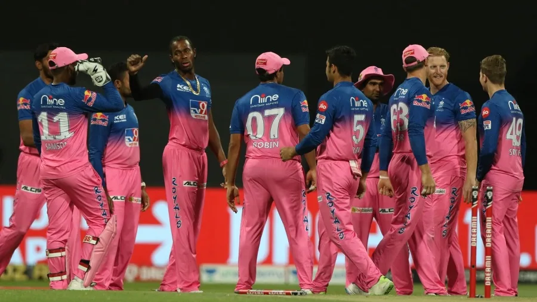

PREVIEW-RR VS DC
Royals out to work their way around Stokes-shaped void
By Author on Wed, Apr 14, 2021, 08:54 PM
Ben Stokes will no longer be available for Rajasthan Royals this season. In their season
opener against Punjab Kings, Royals' new captain Sanju Samson constantly sought Stokes's counsel on the
field, feeding off the experience of the English all-rounder. Stokes even was seen having chats with
Chetan Sakariya when the youngster had the ball in hand. His broken finger therefore comes as a big blow
not just for Rajasthan, but Samson too, which could be why Stokes will continue to stay on in India
despite the injury.
After their opening game heartbreak, Samson will now have to try and outwit last season's finalists
Delhi Capitals, who despite missing mainstays like Kagiso Rabada, Anrich Nortje and Axar Patel, put away
Chennai Super Kings rather comfortably. However, they too have been hit with a snag leading into the
contest, once again levelling the playing field. The Capitals would've hoped to bring in their South
African pace duo, but COVID-related logistical issues have rendered them unavailable - something the
Royals would love to capitalise on.
"The feeling in the squad is really good. We're all eager to get back on the pitch and do well. We
played well in the last game and unfortunately didn't quite get over the line. I think it's important
for us to follow the process and take it game by game. Important to focus on what our job is, that is to
express ourselves and play the brand of cricket we want to play. I believe we have a strong squad that
is capable of producing the right results in different situations." - Sanju Samson.
Read More>>